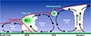

tropopause

Definition: The tropopause is the atmospheric boundary that demarcates the troposphere from the stratosphere, which are the lowest two of the five layers of the atmosphere of Earth. The tropopause is a thermodynamic gradient-stratification layer, that marks the end of the troposphere, and is approximately 17 kilometres (11 mi) above the equatorial regions, and approximately 9 kilometres (5.6 mi) above the polar regions.
Source: Wikipedia
Wikipedia Page
Wikidata Page